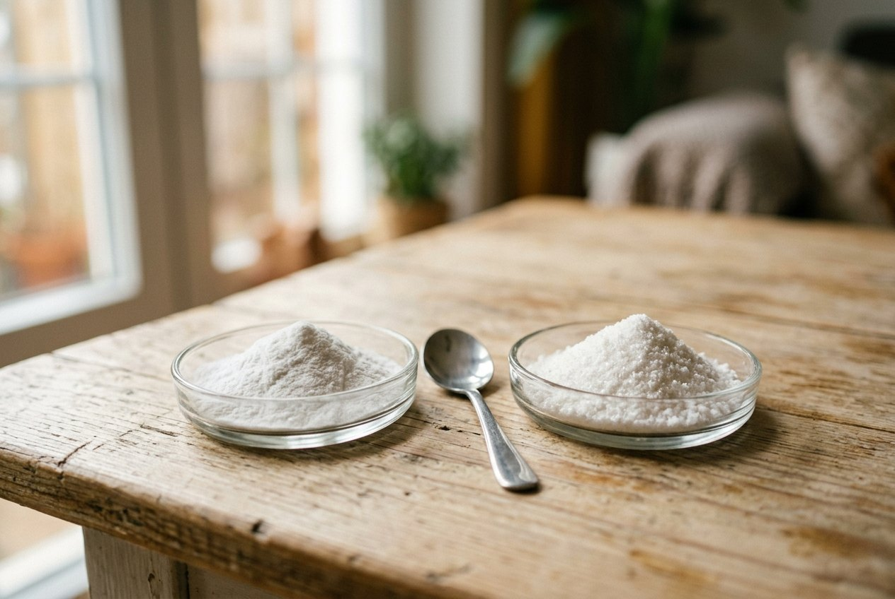
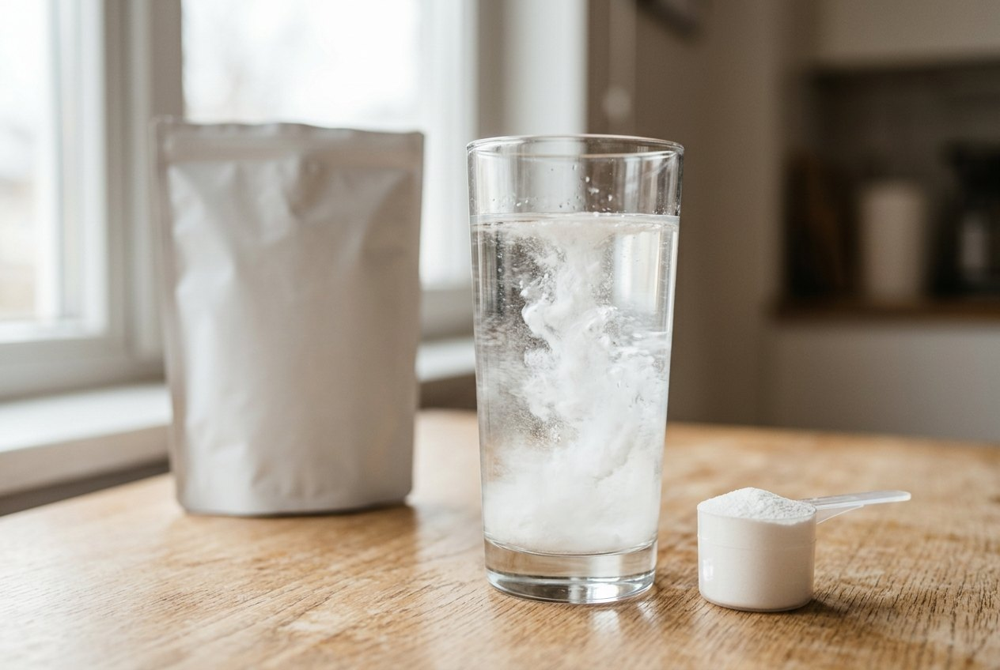

Ingrediënten
Wat betekent Creapure® op een verpakking?

Het korte antwoord: Creapure® is geen merk van creatine maar een kwaliteitslabel: creatine monohydraat uit één Duitse fabriek, die elke batch test op zuiverheid. Het vertelt je waar de grondstof vandaan komt en hoe schoon ze is. Het vertelt je niet hoeveel je er per portie van krijgt. Hieronder lees je wat je er wel en niet uit mag afleiden.
Wat Creapure® precies is
Creapure® is de merknaam van creatine monohydraat van AlzChem, een chemiebedrijf met een productiesite in Trostberg, Duitsland. Een supplementenmerk dat het logo op de verpakking wil zetten, koopt de grondstof daar en krijgt een licentie om de naam te gebruiken. De fabrikant van het eindproduct, dus het merk dat je in de winkel ziet, is bijna nooit AlzChem zelf.
Het verschil met "gewone" creatine monohydraat zit niet in de molecule. Creatine is creatine. Het verschil zit in de herkomst en de controle: één fabriek, één proces, en een analyse per batch.
Wat het label garandeert
- Herkomst. De creatine is in Duitsland gemaakt, niet ingekocht op de wereldmarkt zonder dat je weet waar.
- Zuiverheid per batch. AlzChem test elke productiebatch op bijproducten van het productieproces, zoals dicyandiamide en dihydrotriazine, en op zware metalen. Die bijproducten komen vooral voor bij creatine van mindere kwaliteit.
- Productie onder een kwaliteitssysteem. De fabriek werkt volgens de normen die ook voor voedingsmiddelen gelden, en het label staat op de lijst van grondstoffen die gecontroleerd worden op dopingstoffen.
Voor een gebruiker komt het hierop neer: met Creapure® weet je wat er in de pot of de stick zit, en weet je dat er niets in zit dat er niet hoort.
Wat het label niet garandeert
Dit is het deel dat marketing graag overslaat. Het logo zegt niets over:
- De dosis. Een product met Creapure® kan 3 g per scoop bevatten, of 5 g. Het label gaat over de grondstof, niet over de portie.
- De rest van de formule. Zoetstoffen, elektrolyten, kleurstoffen: daar heeft AlzChem niets mee te maken.
- De vorm. Tub met scoop, sticks of gummies: allemaal mogelijk met dezelfde grondstof.
- Het resultaat. Creatine werkt via de verzadiging van je spiercreatine. Dat gebeurt met zuivere creatine van elke herkomst, zolang de dosis klopt. Creapure® maakt het effect niet groter, het maakt de grondstof betrouwbaarder.
Zo herken je het op een verpakking
Een merk mag het logo alleen voeren met een licentie. Kijk naar drie dingen:
- Het Creapure®-logo op de voorkant of de zijkant van de verpakking.
- De ingrediëntenlijst: daar staat dan "creatine monohydraat (Creapure®)", niet alleen "creatine monohydraat".
- De productpagina van de webshop. Staat het nergens vermeld, ga er dan van uit dat het geen Creapure® is. In ons onderzoek tellen we alleen wat het merk zelf vermeldt.
Let op met de omgekeerde redenering. "Ultrapure", "99,9% zuiver" of "micronised" zijn claims van het merk zelf. Ze kunnen kloppen, maar het is geen batchtest door een derde partij.
Welke producten in onze test het dragen
Van de tien creatines in de ranking vermelden er vier Creapure® op de verpakking of de productpagina: Dosys, Body & Fit, Bulk en Decathlon. Opvallend: Creapure® is niet per se duurder. Decathlon zit met Creapure® op €0,44 per dag, Myprotein zonder op €0,28, maar Optimum Nutrition zonder op €0,54. De prijs per dag wordt meer bepaald door de verpakkingsgrootte en de verzendkosten dan door het label.
In onze methodologie krijgt Creapure® 3 van de 19 kwaliteitspunten. Een merk dat zelf een zuiverheidsclaim op het etiket zet, krijgt 2. Een merk dat niets vermeldt, 1. Zo lees je de kolom "Kwaliteit" in de vergelijkingstabel.
Checklist voor het etiket
- Staat het Creapure®-logo op de verpakking of de productpagina?
- Staat "(Creapure®)" achter creatine monohydraat in de ingrediëntenlijst?
- Hoeveel gram creatine per portie, en is dat 3 g of 5 g?
- Wat zit er nog meer in: zoetstoffen, kleurstoffen, elektrolyten?
- Staat er een land van productie of een notificatienummer op?
Veelgestelde vragen
Is Creapure® beter dan andere creatine?
Het is dezelfde molecule. Het verschil is dat de herkomst vaststaat en elke batch getest wordt op bijproducten. Het effect van creatine hangt af van de dosis, niet van het label.
Is creatine zonder Creapure® onveilig?
Niet per definitie. Veel merken kopen zuivere creatine in zonder het label. Je weet alleen minder zeker waar ze vandaan komt en of elke batch getest is, tenzij het merk dat zelf aantoont.
Waarom scoren merken zonder vermelding lager in jullie test?
Omdat we alleen meewegen wat op het etiket of de productpagina staat. Een merk dat Creapure® gebruikt maar dat niet vermeldt, krijgt daar geen punten voor.
Lees ook
